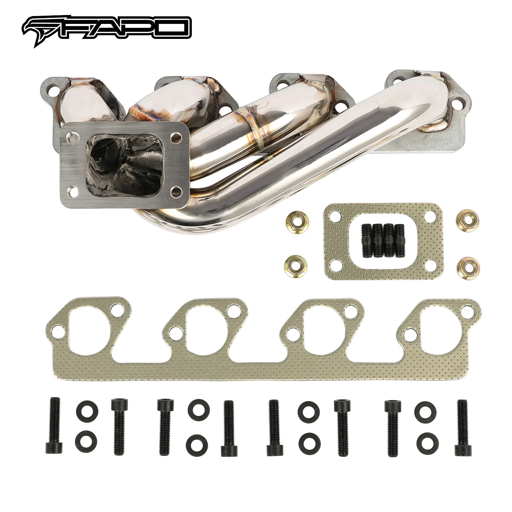

1 / 7FAPO kolektor turbosprężarka T3 Do 83-89 Ford Mustang SVO Thunderbird Mercury Cougar XR-7 Merkur XR4Ti 2.3L Side Mount
Aplikacja 1984-1986 Ford Mustang SVO z 2.3L 140Cu. W. I4 GAS SOHC z turbodoładowaniem 1983-1988 Ford Thunderbird z 2,3 l 140Cu. W. I4 GAS SOHC z turbodoładowaniem 1984-1986 Mercury Cougar XR-7 z 2,3 l 140 Cu. W. I4 GAS SOHC z turbodoładowaniem 1985-1989 Merkur XR4Ti z 2,3 l 140Cu. W. I4 GAS SOHC z turbodoładowaniem Cechy Hybrydowy kołnierz Turbo T3, T3/T4; Pasuje do standardowej turbosprężarki Garrett T3, hybrydowej…
Application 1984-1986 Ford Mustang SVO with 2.3L 140Cu. In. I4 GAS SOHC Turbocharged 1983-1988 Ford Thunderbird with 2.3L 140Cu. In. I4 GAS SOHC Turbocharged 1984-1986 Mercury Cougar XR-7 with 2.3L 140Cu. In. I4 GAS SOHC Turbocharged 1985-1989 Merkur XR4Ti with 2.3L 140Cu. In. I4 GAS SOHC Turbocharged Features T3, T3/T4 Hybrid Turbo Flange; fits stock Garrett T3 turbo, T3/T4 hybrid turbo, and 87-88 IHI turbo Direct replacement for stock cast manifold Flat 4-hole engine flanges, after special process shaping, more suitable for engine installation position Excellent quality and durability to improve vehicle performance, engineered to be bolt-on replacement for easy installation Tubular manifold design with better exhaust flow and delivers more power Precision aligned tubes made of 16-gauge 304 stainless steel Head flanges laser-cut from high quality 7/16-inch thick steel plates The flange is flattened by a hydraulic press for precise and leak-free sealing All joints are golden color TIG brass style welded to prevent cracking and wear Flanges chrome plated for corrosion resistance Polished surface for extra protection against rusting The accessories in the photos are included 1 year warranty for any manufacturing defect No instructions provided; professional install recommended Technical Specifications Manifold Type: Tubular Turbo Manifold Runner Diameter: 1-5/8 in. (42mm) Runner Layout: Unequal Length Turbo Fitment: T3, T3/T4 Hybrid Turbo Mount Position: Side Mount Head Flange Thickness: 7/16 in. (11.5mm) Pipe Thickness: 16 gauge (1.5mm) Material: 304 Stainless Steel Finish: Polished
1399,99 PLN
Opis produktu
Aplikacja
- 1984-1986 Ford Mustang SVO z 2.3L 140Cu. W. I4 GAS SOHC z turbodoładowaniem
- 1983-1988 Ford Thunderbird z 2,3 l 140Cu. W. I4 GAS SOHC z turbodoładowaniem
- 1984-1986 Mercury Cougar XR-7 z 2,3 l 140 Cu. W. I4 GAS SOHC z turbodoładowaniem
- 1985-1989 Merkur XR4Ti z 2,3 l 140Cu. W. I4 GAS SOHC z turbodoładowaniem
Cechy
- Hybrydowy kołnierz Turbo T3, T3/T4; Pasuje do standardowej turbosprężarki Garrett T3, hybrydowej turbosprężarki T3/T4 i turbosprężarki 87-88 IHI
- Bezpośredni zamiennik kolektora odlewanego w magazynie
- Płaskie 4-otworowe kołnierze silnika, po specjalnym procesie kształtowania, bardziej odpowiednie dla pozycji montażowej silnika
- Doskonała jakość i trwałość poprawiająca osiągi pojazdu, zaprojektowana jako zamiennik przykręcany w celu łatwej instalacji
- Konstrukcja kolektora rurowego zapewnia lepszy przepływ spalin i zapewnia większą moc
- Precyzyjnie wyrównane rurki wykonane ze stali nierdzewnej 304 o średnicy 16 mm
- Kołnierze głowicy wycinane laserowo z wysokiej jakości blach stalowych o grubości 7/16 cala
- Kołnierz jest spłaszczany za pomocą prasy hydraulicznej, co zapewnia precyzyjne i szczelne uszczelnienie
- Wszystkie połączenia są spawane metodą TIG w kolorze złotym, aby zapobiec pękaniu i zużyciu
- Kołnierze chromowane, co zapewnia odporność na korozję
- Polerowana powierzchnia dla dodatkowej ochrony przed rdzą
- Akcesoria widoczne na zdjęciach są wliczone w cenę
- 1 rok gwarancji na wszelkie wady produkcyjne
- Brak instrukcji; zalecana profesjonalna instalacja
Dane techniczne
- Typ kolektora: Rurowy kolektor Turbo
- Średnica prowadnicy: 1-5/8 cala (42mm)
- Układ prowadnicy: nierówna długość
- Montaż Turbo: T3, T3/T4 Hybrid
- Pozycja mocowania turbo: mocowanie boczne
- Grubość kołnierza głowicy: 7/16 cala (11,5 mm)
- Grubość rury: 16 mm (1,5 mm)
- Materiał: stal nierdzewna 304
- Wykończenie: polerowane
Application
- 1984-1986 Ford Mustang SVO with 2.3L 140Cu. In. I4 GAS SOHC Turbocharged
- 1983-1988 Ford Thunderbird with 2.3L 140Cu. In. I4 GAS SOHC Turbocharged
- 1984-1986 Mercury Cougar XR-7 with 2.3L 140Cu. In. I4 GAS SOHC Turbocharged
- 1985-1989 Merkur XR4Ti with 2.3L 140Cu. In. I4 GAS SOHC Turbocharged
Features
- T3, T3/T4 Hybrid Turbo Flange; fits stock Garrett T3 turbo, T3/T4 hybrid turbo, and 87-88 IHI turbo
- Direct replacement for stock cast manifold
- Flat 4-hole engine flanges, after special process shaping, more suitable for engine installation position
- Excellent quality and durability to improve vehicle performance, engineered to be bolt-on replacement for easy installation
- Tubular manifold design with better exhaust flow and delivers more power
- Precision aligned tubes made of 16-gauge 304 stainless steel
- Head flanges laser-cut from high quality 7/16-inch thick steel plates
- The flange is flattened by a hydraulic press for precise and leak-free sealing
- All joints are golden color TIG brass style welded to prevent cracking and wear
- Flanges chrome plated for corrosion resistance
- Polished surface for extra protection against rusting
- The accessories in the photos are included
- 1 year warranty for any manufacturing defect
- No instructions provided; professional install recommended
Technical Specifications
- Manifold Type: Tubular Turbo Manifold
- Runner Diameter: 1-5/8 in. (42mm)
- Runner Layout: Unequal Length
- Turbo Fitment: T3, T3/T4 Hybrid
- Turbo Mount Position: Side Mount
- Head Flange Thickness: 7/16 in. (11.5mm)
- Pipe Thickness: 16 gauge (1.5mm)
- Material: 304 Stainless Steel
- Finish: Polished
FAPO Polska
Ten produkt obsługujemy lokalnie
Autoryzowana obsługa
FAPO Polska prowadzi katalog, kontakt i zamówienia bez odsyłania klienta do zewnętrznych sklepów.
Dobór po aucie
Sprawdzamy dopasowanie produktu do pojazdu, rocznika i wersji przed finalizacją zamówienia.
Wsparcie po zakupie
Masz kontakt w Polsce w sprawach zamówień, wysyłki, gwarancji i zwrotów.